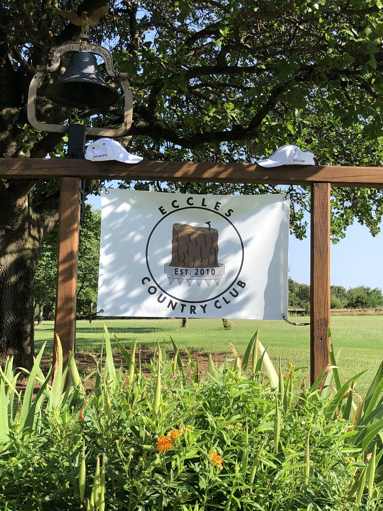

The Rules
Game Play
-
First and foremost, anything the Course Manager says goes. This is almost
always utilized to change a rule in the middle of play to give an advantage
to the Course Manager. The Course Manager also makes rulings on all scoring
disputes on the course. If the course manager is not around, then the person
who has had the most beers that day will settle the dispute.
-
Eccles Golf can be played as individuals or with teams (scramble, best ball,
etc.). It is best played with no more than 4 teams (or individuals) and no
more than 8 people total if playing teams.
-
In Eccles Golf your bag must consist of one club and one club only. It is
recommended that this club be a wedge of some type, but it is not required.
You are not permitted to change clubs at any point during a round.
-
If a house is struck by a players ball then that player is immediately
disqualified from the round, but the team the player was on can continue a
person down.
-
There are several out of bounds (OB) areas on the course. Anything outside
of the fence and any garden area cover most, if not all, OB areas. A stroke
penalty will be assessed for going OB and the ball must be dropped anywhere
that is no closer to the pin than where that player went OB.
-
One exception is on hole 6, the par 5. If a player goes OB over the far
fence on his/her tee shot, there is a 2 stroke penalty and that player
must drop from behind the garden that is in front of the green.
-
Every stroke of the ball must be a single solid strike. If the ball is
lifted or if there is an intentional double hit, a penalty stroke will be assessed.
-
To decide the starting order at the first tee box players will toss their
golf ball at a tee box marker chosen by the Course Manager. First up will be
the ball that was furthest away, second will be the second furthest ball,
and so on to the one that was closest. From then on out the order at the tee
box will be determined by the scores of the players or teams.
-
When teeing up at the tee box the ball must be between the tee box markers
and no more than a clubs length behind them. Never place the ball in front
of the markers.
-
Completing a hole - a hole is completed when a player makes contact with the
hole (the flag stick and flag count as part of the hole) with their ball and
the ball stays within a grips length of the outer edge of the hole OR the
ball comes to rest inside the hole.
-
A hole in one is awarded if on a players first shot the ball comes to
rest within a grips length of the outer edge of the hole (no matter if
the ball makes contact with the hole or not) or comes to rest inside the
hole (this is known as the Kevin rule). A player is awarded an extra
point for the hole in one.
-
Scoring - Eccles Golf is a point based golf system. Points are awarded to
players or teams based on the number of strokes to finish the hole, closest
to the pin, green in regulation, and popping it in. The points awarded are
as follows.
-
0 points for double bogie
-
1 point for bogie
-
2 points for par
-
3 points for birdie
-
4 points for eagle
-
5 points for double eagle
-
1 point for closest to (this is awarded on the same stroke that counts
for green in regulation and is only awarded to one player or team)
-
If a player completes a hole before the stroke that counts for green
in regulation, that stroke is now the stroke that is counted for
closest to.
-
1 point for green in regulation (being on the green in par minus two
strokes)
-
1 point for popping the ball in the hole (this point is not awarded for
anything more than a double bogie)
-
Playoff - If two or more players or teams end with the same amount of points
there will be a playoff between those players or teams. The first playoff
hole is hole 2 and if extra holes are needed the course is continued in
normal order.
Course Rules
-
Name calling and shit giving is encouraged.
-
Drinking is allowed on the course, but please be courtious where the empties
are placed.
-
The person in last place or the last person disqualified has to go get the
beers for all other players.
-
Course beer is Old Style, but any beer that is brought will be allowed on
the course.
-
Eccles Country Club has clubs, balls, and tees for rent or purchase. Balls
and tees are on the number 1 tee box. Clubs are located in the pro shop (the
garage).
-
Last but not least, have a good time!
Variants
-
Scramble - A team of two or more players hit shots from the best ball of
their team after each stroke. The player whose ball is chosen to be played
must play first. Players that follow must drop their ball (from Eccles
shoulder height) in the same place as their teammates ball.
-
Drinking Points - At the beginning of the game if all players or teams
agree, a point will be added to the players or teams score for every beer
that they finish throughout the round.
-
Two Tie All Tie - If two or more players or teams tie after the round is
over, all players or teams participate in the playoff. On the first hole of
the playoff (hole 2), only the players or teams that tied have a chance to
win. Other players or teams may try to win the hole to keep the two players
or teams who tied from winning. After the first playoff hole (hole 2) all
teams are eligible to win the playoff.
